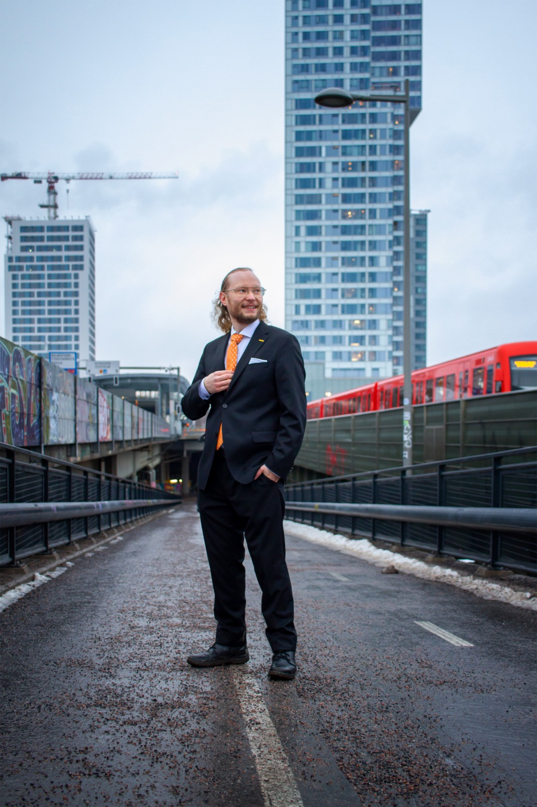
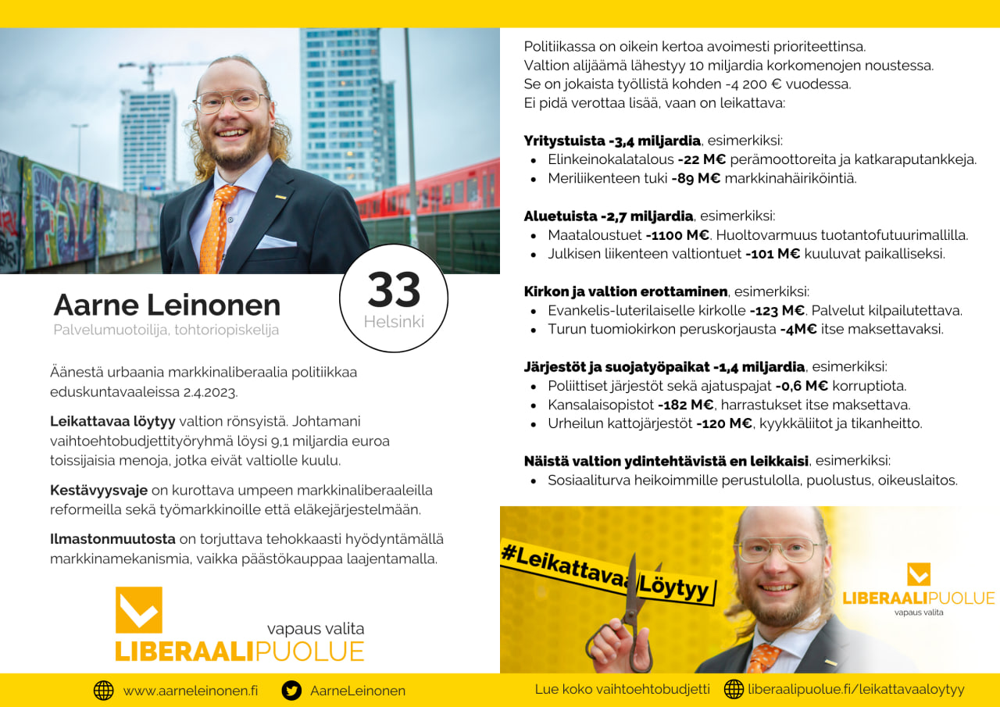

Terve, olen Aarne Leinonen, Helsingissä asuva kolmikymppinen maailmankansalainen. Toimin Liberaalipuolue - vapaus valita r.p.:n puoluesihteerinä ja johdin Liberaalipuolueen #LeikattavaaLöytyy varjobudjettityöryhmää jolla löysimme -9,1 miljardia toissijaisia tehtäviä valtion keltaisesta budjettikirjasta.
Olen urbaani arvo- ja markkinaliberaali, jonka mielestä ilmastonmuutos, köyhyys ja väestön vanheneminen tulevat olemaan oikeutetusti elinikäni merkittävimmät poliittiset teemat. Liberaali filosofi ja systemaattinen asioiden selvittäjä kuvaa minua henkilönä. Arvomaailmaltani olen liberaali, humanisti ja feministi. Uskon, että julkisella sektorilla Suomessa on tällä hetkellä liian suuri rooli ihmisten elämässä. Yksilöillä kuuluu olla enemmän vapautta ja vastuuta omista päätöksistään. Pidän kaupungistumisen ja globaalin yhteistyön puolia politiikassa. EU:n suhteen olen federalisti. Kannatan NATO-jäsenyyttä. Ilmastotoimiin liittyen päästökaupan laajentaminen, hiilitullien käyttöönotto ja ydinvoima ovat mielestäni hyviä keinoja.
Koulutukseltani olen diplomi-insinööri ja jatko-opiskelija palvelumuotoilun aihepiiristä. Toimin nykyään kasvuyrityksessä palvelumuotoilijana. Ammatillisesti minua kiinnostaa ihmiskeskeinen suunnittelu asiakasarvon luomisen välineenä. Töissäni pyrin parantamaan organisaatioiden kykyä nähdä maailma loppuasiakkaan silmin. Olen tähän mennessä toiminut palvelumuotoilijana, käyttökokemussuunnittelijana ja kurssiassistenttina. Lisäksi olen organisoinut opiskelijaprojekteja ja fasilitoinut työpajoja. Pidän johtamisesta ja opettamisesta, sekä varsinkin johtamisen opettamisesta. Kaikki nämä liittyvät pohjimmiltaan toisten ihmisten mielenmaisemien ymmärtämiseen ja jonkin ihmiskunnalle arvokkaan tavoitteluun. Valmistuin Aalto-ylipistosta Informaatioverkostojen koulutusohjelmasta diplomi-insinööriksi vuonna 2018. Olen ollut jatko-opiskelijana Aalto-yliopiston muotoilun laitoksella vuodesta 2019 lähtien. Olen julkaissut yhden tieteellisen artikkelin otsikolla "Service Design Handover to user experience design – a systematic literature review".
Minua voi äänestää 2023-04-02 järjestettävissä eduskuntavaaleissa Helsingin vaalipiirissä Liberaalipuolue - vapaus valita r.p. listalta numerolla 33.
Vaaliesitteessä olen kuvannut teemani eduskuntavaaleihin.
Leikattavaa löytyy ja velkaantumiselle on vaihtoehto. Suomen veroastetta ei ole syytä nostaa, vaan sopeuttaa valtion menoja, jotta ihmisten päätäntävalta omiin rahoihinsa lisääntyy. Valtio on rönsyillyt tehtäviin jotka eivät sille kuulu, eikä meillä kestävyysvajeen vuoksi ole varaa ylläpitää kaikkia niitä tehtäviä joita nyt tehdään. Olen Liberaalipuolueen vaihtoehtobudjettityöryhmällä käynyt läpi valtion budjetin momentti momentilta ja löytänyt sieltä 9,1 miljardia leikattavaa. Yritystukia on leikattava -3,4 miljardia. Voittajien valinta ei kuulu valtiolle vaan vaan asiakkaille. Aluetuista on leikattavaa -2,7 miljardia €, koska kaupungistumista vastaan on turha taistella ja huoltovarmuus voidaan toteuttaa tehokkaammin. Järjestöistä ja suojatyöpaikoista on karsittavaa -1,4 miljardia €.
Lue koko vaihtoehtobudjetti Liberaalipuolueen nettisivuilta.
Katso Aarne Leinosen esiintyminen Puheenaihe-ohjelmassa Youtubesta.
Katso Liberaalipuolueen Leinonen - Miljardien leikkauslista | Heikelä&Koskelo 23 minuuttia | 519.
Tapaan ihmisiä metroasemien varsilla ja Narinkkatorilla. Päivitän tarkemman aikataulun tänne kun varmistuu.
La 11.3. Itäkeskuksen Tallinnanaukio klo 14-17. Räntää satoi mutta äänestäjät olivat kiinnostuneita.
Su 12.3. Mellunmäen metroaseman edusta klo 12-14. Aurinko paistoi flaikut loppuivat.
To 16.3. Puolueen puheenjohtaja Lassi Kivinen esiintyy pienpuoluetentissä YLE ja YLE Areena.
su 19.3. klo 12-14 Narinkkatori
su 19.3. klo 15-16 Lauttasaari, metroaseman ympäristö
su 19.3. klo 16-17 Ruoholahti, metroaseman edusta
ma 20.3. klo 7-9 Herttoniemi, metroaseman edusta
ma 20.3. klo 16-18 Myllypuro, metroaseman edusta
ti 21.3. klo 7-9 Kalasatama, metroaseman edusta
ti 21.3. klo 16-18 Vuosaari, metroaseman edusta
ke 22.3. klo 7-9 Kontula, metroaseman edusta
ke 22.3. klo 16-18 Rautatieaseman edusta
ke 22.3. klo 18- Kaivopiha Dubliner, Liberaalipuolue ennen ja nyt - pöhisevä vaalitapahtuma. Tervetuloa mukaan!
to 23.3. 11-17 Otaniemi, Liberaalien edustus #LeikattuaLöytyy tiimillä AYY krokettiturnauksessa
to 23.3. 18- Leppävaara, Liberaalien Espoon afteri, Pub William K, Sellon ylätasanne, Viaporitori. Tervetuloa mukaan!
pe 24.3. klo 7-9 Helsingin yliopiston metroaseman tunneli
pe 24.3. klo 16-18 Kampin ympäristö
la 25.3. klo 11-14 Narinkkatori
la 25.3. klo 15-17 Korso, Vantaan suurmarkkinat
su 26.3. klo 10-11 Itäkeskus, metroaseman edusta Tallinnanaukiolla
su 26.3. klo 12-14 Narinkkatori
ma 27.3. klo 7-9 Siilitie, metroaseman edusta
ma 27.3. klo 16-18 Sörnäinen, kurvi
ti 28.3. klo 7-9 (ei tiedossa), joku metroaseman edusta
ti 28.3. klo 16-18 Rastila, metroaseman edusta
Vaalirahoituksessa haluan olla täysin avoin. Aarne Leinosen tukiryhmä on saanut lahjoituksina 15 670,05 €. Yksityishenkilöitä jotka lahjoittivat kampanjaani on 109 kpl ja yhdistyksiä on 1 kpl. Lue vaalirahoituksen ennakkoilmoitukseni VTV:n nettisivuilta tai kampanjani vaalirahoituksen käyttökohteista twiitti-ketjusta. Hain vaalirahoitusta Pro Markkinatalous ry:ltä ja sain sitä 3000 €. Lue blogista hakemustekstini Pro Markkinatalous ry:n 2023 eduskuntavaalien vaalirahoitushakemukseen. Yhden yksityishenkilön lahjoitus ylitti julkistamisen rajan ja hänen tietonsa on kerrottu VTV:lle toimitetussa ja avoimesti luettavassa raportissa.
Uusimaa yhdistetään yhdeksi hyvinvointialueeksi liittämällä Helsinki, Länsi-Uusimaa, Keski-Uusimaa, Vantaa-Kerava ja Itä-Uusimaa yhteen.
Julkisen sektorin menot eivät kasva ja leikkaukset tämän toteuttamiseksi aloitetaan palveluiden alueellisesta kattavuudesta mielummin kuin jonoja pidentämällä. Hallintoa kevennetään.
IT-järjestelmät hankitaan vapaan lähdekoodin ja avointen rajapintojen ehdottomalla vaatimuksella, jolloin julkisten tietojärjestelmien laatu paranee.
Lue blogimuotoinen tiivistys aluevaaliteemoistani mediumissa.
Toimin 2021-2023 Liberaalipuolueen puoluesihteerinä.
Olen toiminut Liberaalipuolueen vaihtoehtobudjetti työryhmän vetäjänä. Vaihtoehtobudjetissa
Vaihtoehtobudjetti tehtiin sellaisella tarkkuudella, että budjetin parissa työskentelevä virkakunta voi ottaa sen suoraan käyttöön. Jokainen budjetin viidestäsadasta momentista on arvioitu kriittisesti. Olemme toisin sanoen toteuttaneet tehtävän, joka on edessä jokaisella tulevalla kansanedustajalla, ja erityisesti seuraavalla valtiovarainministerillä. Liberaalipuolue on tehnyt pohjatyönsä eduskuntaan. Me olemme valmiita käyttämään valtaa, jos kansalaiset sitä meille kevään vaaleissa suovat
Varjobudjetti löytyy osoitteesta liberaalipuolue.fi/leikattavaaloytyy.
Diplomityössäni tarkastelin laadullisin menetelmin asiakkaiden arvokokemusta sähkökirjapalvelua käyttäessä. Lisäksi tunnistin heuristiikkoja, joita kuluttajat käyttävät sähkö- ja äänikirjaformaatin valinnassa suhteessa perinteiseen painettuun kirjaan. Diplomityöni on luettavissa Aalto-yliopiston sähköisessä arkistossa: https://aaltodoc.aalto.fi/handle/123456789/32487
Lue blogimuotoinen tiivistys diplomityöstäni mediumissa.
Eduskuntavaalien alla 2015 visualisoin HS:n ja Ylen vaalikoneista tehdyn tilastollisen analyysin interaktiivisessa ja responsiivisessa muodossa. Työkalulla pystyy tarkastelemaan yksittäistä ehdokasta tai puoluetta suhteessa muihin useiden vaihdeltavien akselien avulla. Analyysissä on hyödynnetty ryhmittelyanalyysiä, jolla on muodostettu yhtenäisiä vastaajaprofiileja (segmentit) ja faktorianalyysiä, jolla on saatu esiin suurempia sisältökokonaisuuksia (akselit). Sivuston tavoitteena oli tukea kokonaiskuvan muodostumista 2015 eduskuntavaalien ehdokkaista ja puolueista. Vaaleihin mennessä sivusto sai yli 10 000 kävijää.